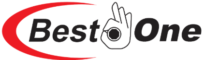

MITEX 2026 · Индия · Стенд 7B1102
BEST ONE TOOLS PRIVATE LIMITED
Карточка проверена 10 ноября 2026, 09:28 · Источник ↗ · Снимок оригинальной карточки ↗
О компании
Best One Tools Pvt. Ltd. — ведущий производитель ручного инструмента, расположенный в Сангаль-Сохале, Джаландхар, штат Пенджаб — одном из крупнейших промышленных центров Индии с развитой транспортной инфраструктурой. Компания начала свою деятельность в 2013 году, продолжив успешный опыт компаний группы Bubble Exports и Bubble Overseas. Сегодня Best One Tools развивается под руководством молодого поколения управленцев — генерального директора г-на Таранбира Сингха и управляющего директора г-на Даманджита Сингха. Best One — символ качества и доверия, признанный клиентами компании по всему миру. Мы вносим свой вклад в развитие промышленного потенциала страны. Неизменно высокие стандарты качества позволили компании занять прочные позиции на рынке и сформировать широкий ассортимент продукции. Этому способствует эффективная система менеджмента качества, соответствующая требованиям ISO 9001:2015. Мы — компания, ориентированная на будущее, способная поддерживать высокие темпы роста и последовательно повышать ценность бренда и продукции в интересах наших клиентов. Почему Best One? Высококвалифицированная команда с глубокой профессиональной экспертизой. Эффективная система менеджмента качества, соответствующая требованиям ISO 9001:2015. Система социальной ответственности, соответствующая требованиям SA8000. Система безопасности предприятия, организованная в соответствии с требованиями C-TPAT. Приверженность принципам бережливого управления (Lean Management). Оперативная разработка продукции с ориентацией на получение требуемого результата с первого раза. Современная производственная база и комплексное оборудование для контроля качества, а также собственные возможности в области проектирования и разработки продукции. Наше видение Мы стремимся каждый день делать мир лучше и создавать долгосрочную ценность для каждого благодаря выдающимся усилиям и постоянному развитию. Наша миссия Мы непрерывно совершенствуем свою работу и поддерживаем постоянное взаимодействие с клиентами, чтобы соответствовать их ожиданиям в отношении качества, сроков поставки и стоимости. Наш кодекс этики и профессионального поведения Независимо от того, какую работу вы выполняете и где вы её выполняете, вы представляете Best One. Помните об этом в каждом деловом взаимодействии, каждой сделке и при работе с каждым продуктом. Все ваши действия должны неизменно отражать ценности нашей компании.
Контакты
Все контактные сведения из карточки
Контакты V.P.O. SANGAL SOHAL, BEHIND LEATHER COMPLEX Адрес: 144021, Индия, PUNJAB , JALANDHAR Веб-сайт: https://www.bubbleexport.com/ E-mail: guranjan@bestonetools.in Телефон: +918725079909
Все рубрики участника
Mitex - Рубрикатор
- 5. Слесарный, монтажный, столярный, ручной инструмент
Зал
- Зал № 7
Участник выставки
- MITEX
Видео, каталоги и документы
В доступной карточке нет видео или документов. Смотрите сайт участника.